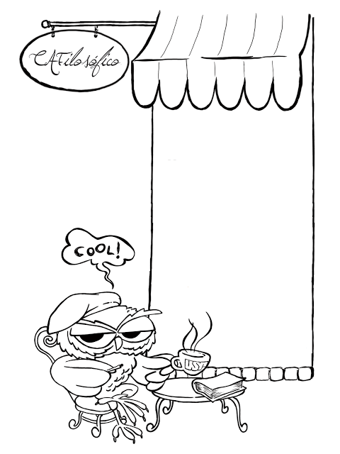

Pândegos da Filô
O Pândegos da Filô é um evento gratuito realizado pelo Centro Acadêmico da Filosofia (CAFi) e organizado por esta entidade juntamente com os alunos da Faculdade de Filosofia, Ciências e Letras de Ribeirão Preto.!
O objetivo é incentivar e divulgar a produção cultural e artística da Universidade de São Paulo e do município de Ribeirão Preto através de oficinas gratuitas distribuidas ao longo da semana. O evento conta com apresentações musicais, teatro, dança, vídeo, exposições de pintura, desenho, fotografia, escultura, poesia, dando preferência às produções originais, apresentado de modo cômico, sendo tradicionalmente o maior evento cultural e de entretenimento do Campus!
Curta a página do Pândegos da Filô no facebook!
CAFilosófico
Participem!
Cineclube CineFilo
O Cineclube CineFilo tem como objetivo exibir filmes para formar um público de apreciadores de cinema e difundir a cultura cinematográfica entre a comunidade da USP de Ribeirão Preto. Sua proposta é privilegiar filmes de difícil acesso aos que vivem em uma cidade de interior como Ribeirão Preto, carente de salas de exibição para filmes do chamado “circuito de arte” ou “não comercial”.!
Os filmes exibidos pelo Cineclube são organizados em ciclos temáticos, focando um assunto, um movimento artístico ou um diretor, visando permitir à audiência a construção de uma visão de conjunto sobre o tema tratado. Após cada sessão um debate com a audiência é estimulado para discutir o filme e suas interpretações, além de dar informações sobre sua importância histórica e seu diretor.!
Os filmes são exibidos sempre às sextas-feiras (excetuando-se feriados e recessos acadêmicos), a partir das 16:15 hs, no Anfiteatro das Exatas (Departamentos de Física, de Computação e Matemática e de Química) da FFCLRP, USP, Ribeirão Preto. A entrada é livre.!
O cineclube também organiza sessões especiais em datas e horários diferentes dos tradicionais. Essas sessões são relacionadas a “temas do momento” discutidos pela imprensa ou abordados em outras atividades realizadas no câmpus da USP de Ribeirão Preto. Os anúncios dessas sessões especiais são feitos oportunamente nesta página. !
Oficinas
Participem!